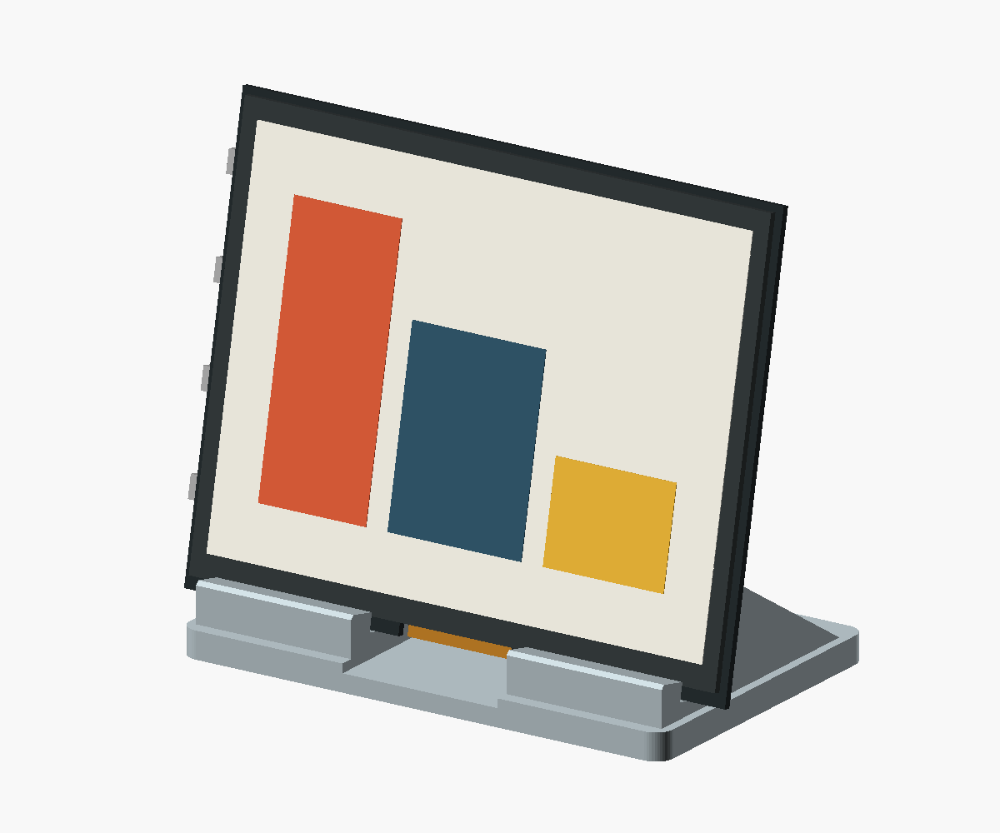
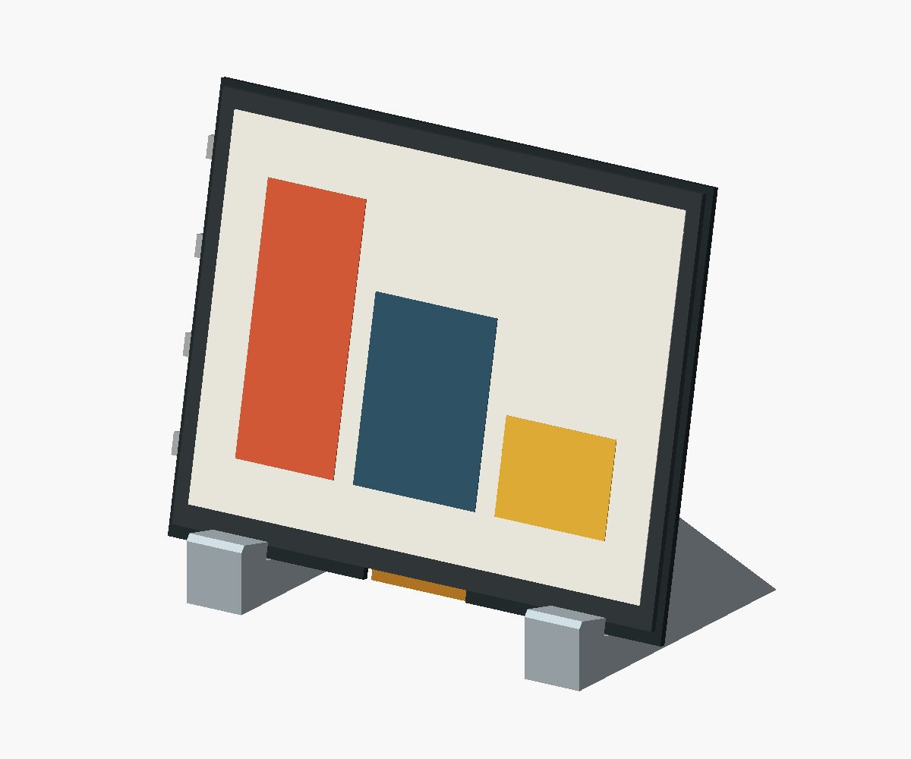
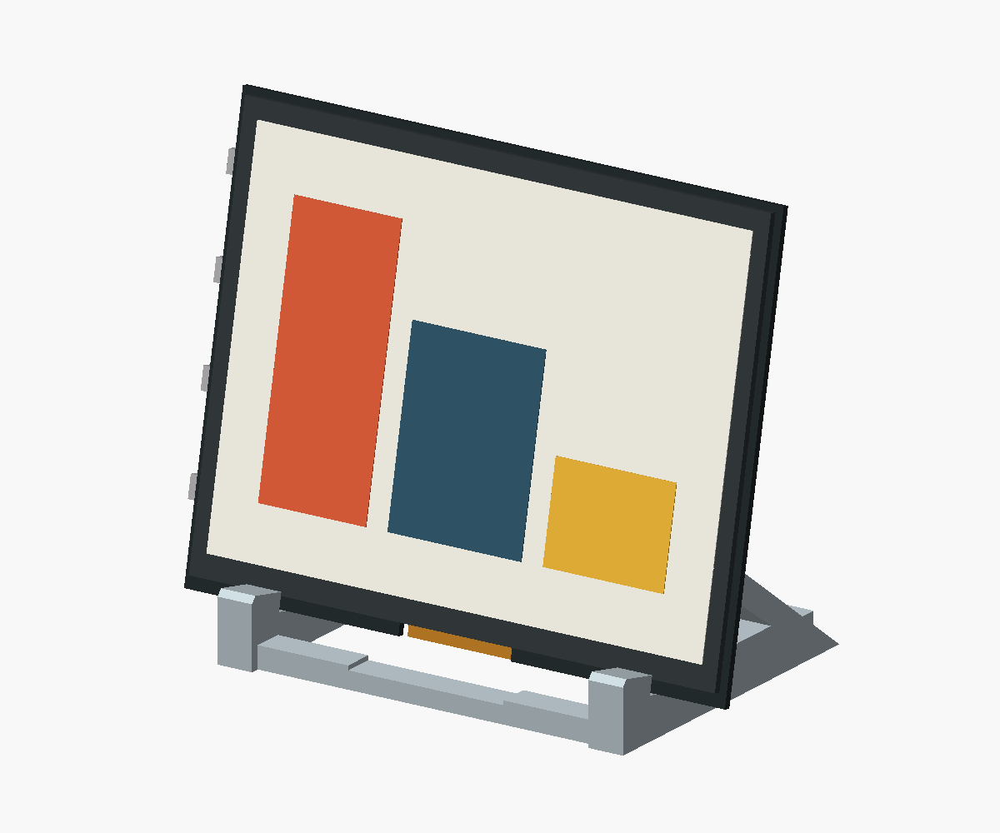
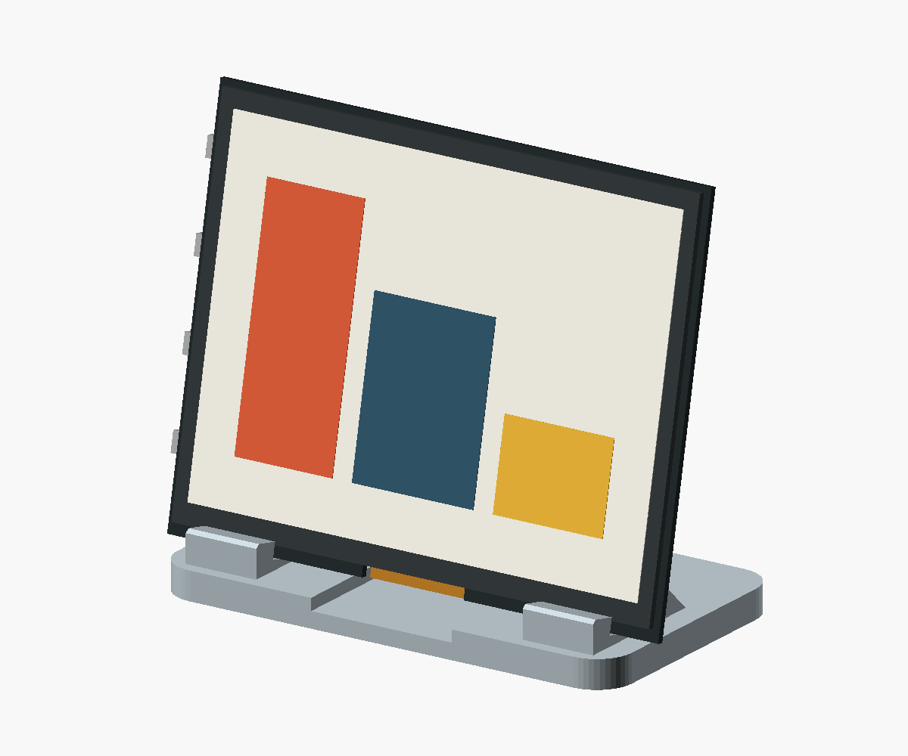

01 / Wedge
The simplest solid form. More material, with a recessed centre for the ribbon and cable.
Four OpenSCAD concepts for the original 5.7-inch Inky. Same 125.4 × 99.5 mm screen, same 12° lean. Switch views to compare the supports and the USB route.

The simplest solid form. More material, with a recessed centre for the ribbon and cable.

My pick: two triangular supports and one rear bridge. Most of the hardware stays accessible.

The most sculptural option. Open sides and slender members; stiffness needs a physical check.

The quietest silhouette from the front. Shorter supports make fit and stability more sensitive.
Fit assumptions: 5.2 mm slots, ribbon clearance and rear electronics are provisional. The vendor’s 9 mm depth includes the header; it is not the lower-edge slot dimension. Measure the assembled unit and use PCB-bearing, padded contact points before printing. Cable shown schematically; bend radius and plug clearance remain to be checked. Vendor dimensions →